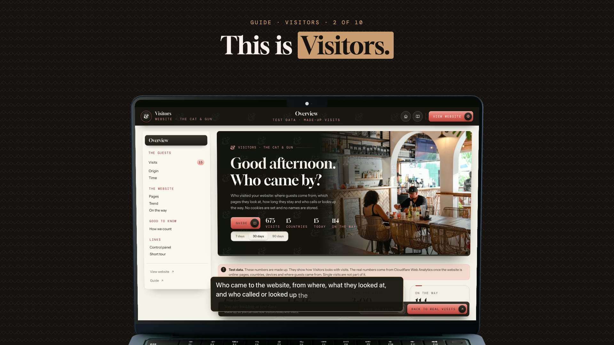

Print & feed
Templates for coasters, beer mats, signs, posters and Instagram posts, as PDFs for the printer and as images.
Chapter 1 of 10 · This is Print & feed.
In this video
What the video shows
Every chapter with the sentence from the video. A click on the time plays the video from there.
- 01This is Print & feed.
- 02Areas of the house.
- 03Find a template.
- 04The editor.
- 05Change a text.
- 06Add things.
- 07Print check.
- 08Ready to print.
- 09The Instagram feed.
- 10My designs.
Up next
Next guide: Visitors
The guides follow the order of the rooms.

I0:54
Visitors
Where guests come from and what they read on the website, for 7, 30 or 90 days, without cookies and without names.
10 chaptersWatch the guide →

Room 06
Back to Print & Instagram
The room with this guide, the animation that shows how it works, the recommendation for use and the learnings.
Print & InstagramEnter the room →